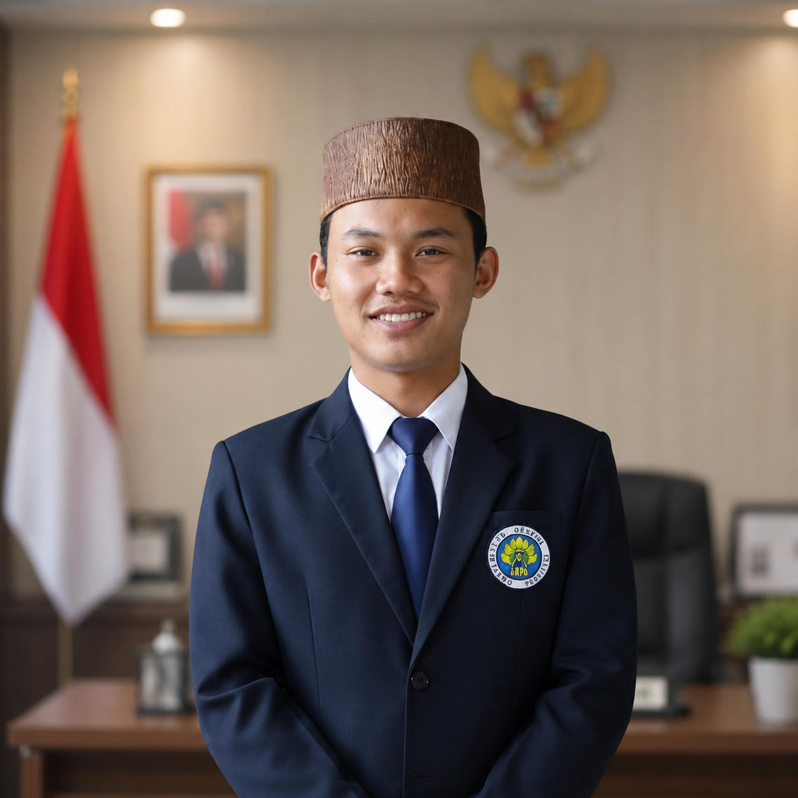

S1 Pendidikan Guru Sekolah Dasar
Fakultas Ilmu Pendidikan – Universitas Negeri Malang
NIM: 230151600989
Saya, Mahardhika Rizky Dharmawan, merupakan mahasiswa aktif program studi S1 Pendidikan Guru Sekolah Dasar di Fakultas Ilmu Pendidikan, Universitas Negeri Malang. Sejak tahun 2017, saya juga menjadi santri di Pondok Pesantren Roudlotul Muta’alimin, tempat di mana saya belajar pentingnya keseimbangan antara ilmu pengetahuan dan nilai moral.
Melalui latar belakang akademik dan religius ini, saya berkomitmen untuk terus mengembangkan inovasi pembelajaran berbasis teknologi dan karakter. Proyek ini saya rancang sebagai bentuk kontribusi nyata terhadap dunia pendidikan dasar, agar proses belajar tidak hanya berorientasi pada hasil, tetapi juga membentuk pribadi yang berakhlak dan berpikir kritis.
Dengan penuh rasa hormat dan syukur, saya mengucapkan terima kasih kepada pihak-pihak yang telah memberikan bimbingan, motivasi, serta dukungan dalam pengembangan proyek ini: